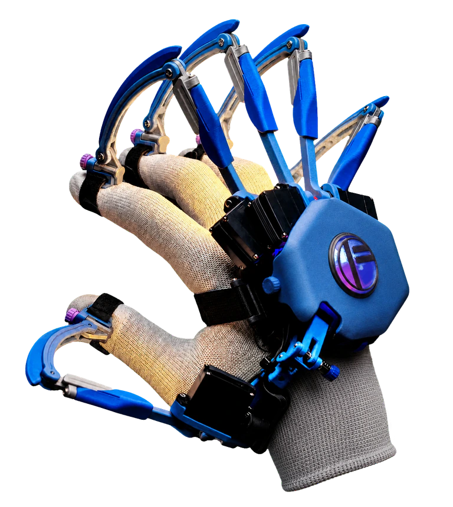
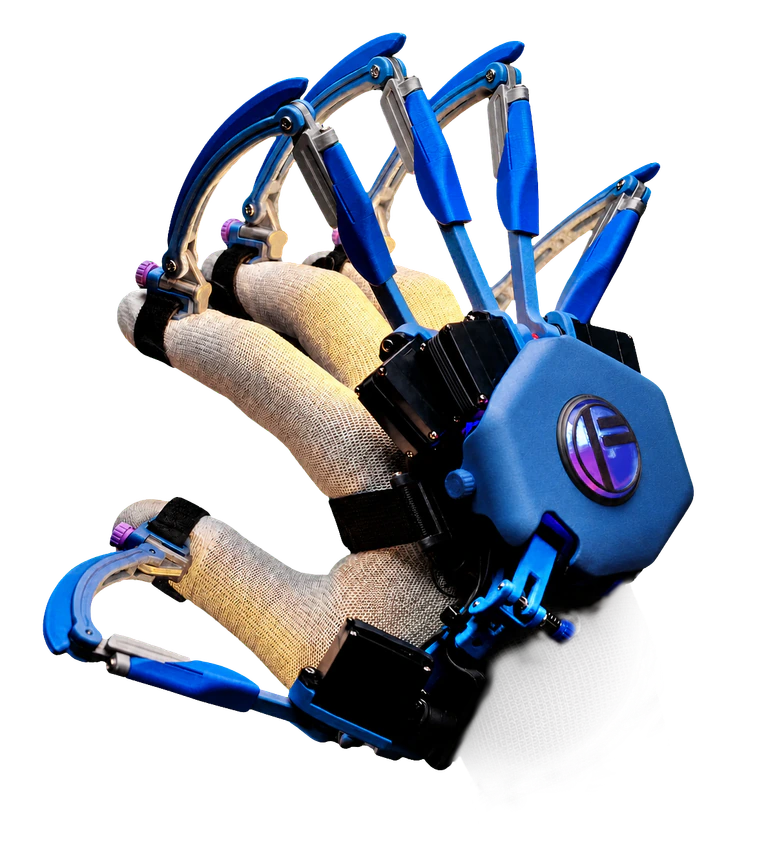
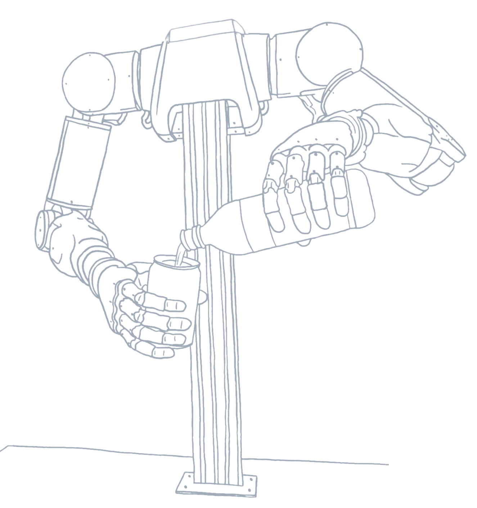
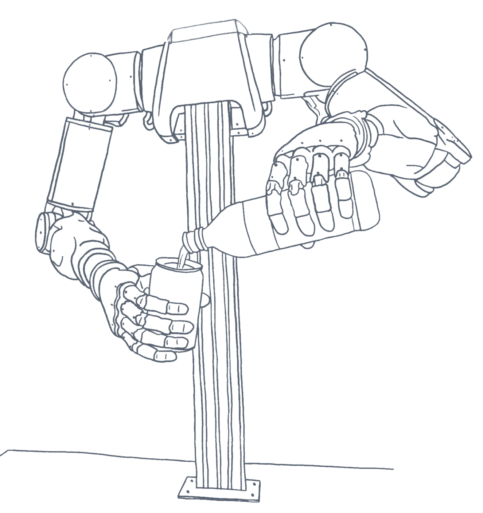
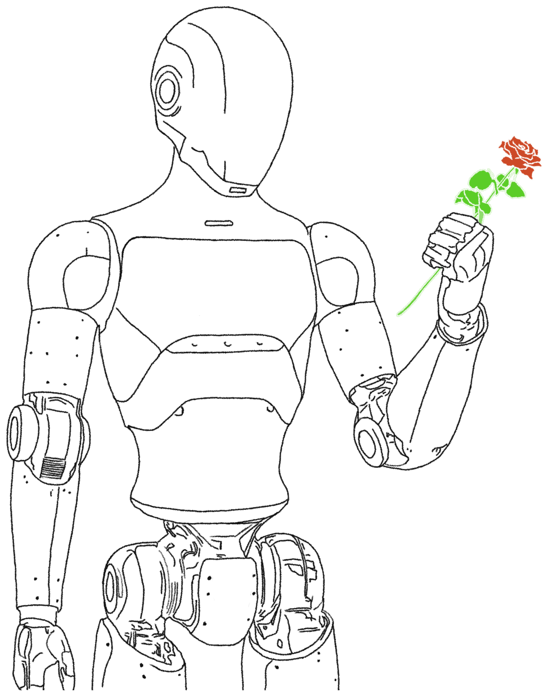

Human first
Der Mensch ist Ursprung, Maßstab und aktiver Teil des Systems.
Brand System
Eine ruhige, physische und selbstbewusste Designsprache für Interfaces, die menschliche Fähigkeiten erweitern.

Scope · Juli 2026
Jede Entscheidung dient der Verständlichkeit des Systems. Die Marke wird nicht durch Dekoration, sondern durch Hierarchie, Materialität und gebaute Beweise unverwechselbar.
Der Mensch ist Ursprung, Maßstab und aktiver Teil des Systems.
Mechanik, Berührung und reale Hardware ersetzen generische Tech-Symbolik.
Große Typografie und negativer Raum schaffen Autorität ohne Lautstärke.
Prototypen, Iteration und Partner belegen die Aussage.
Animation erklärt Richtung, Ursache oder Rückmeldung.
Light und Dark Mode bleiben dieselbe Komposition, präzise neu kalibriert.
Das Unternehmenslogo bleibt neutral, proportional und frei von Effekten. PATON-Blau gehört zum Produkt, nicht in die Wortmarke.
Der Punkt steht für den Menschen als Ursprung von Absicht, Bewegung und Entwicklung.
Der Kreis beschreibt den gegenwärtigen Einflusshorizont: den Raum, in dem ein Mensch handeln kann.
Die Flamme trägt das prometheische Feuer weiter. Sie steht für Technologie als Werkzeug menschlicher Entwicklung.
Die Flamme durchbricht den Kreis. Technologie erweitert den menschlichen Einflusshorizont über seine bisherige Grenze hinaus.
Die blauen und goldenen Flächen dienen ausschließlich der anatomischen Erklärung. Das Logo selbst bleibt in Anwendungen immer monochrom; die vier Darstellungen sind keine zusätzlichen Logovarianten.
Das Symbol trägt die tiefe strategische Bedeutung der Marke. Der Name FELYA LABS bildet dazu einen weicheren, leichteren Gegenpol: Seine feminine Klangfarbe und die mögliche Assoziation mit „feel you“ unterstützen Nähe und Menschlichkeit, ohne als starre wörtliche Herleitung funktionieren zu müssen.
Neutralflächen dominieren. PATON-Blau führt den Blick. Die Produkthierarchie bleibt in beiden Modi identisch.
PATON
Natural movement. Physical feedback.
PATON
Natural movement. Physical feedback.
Jede Farbe besitzt eine konkrete Aufgabe. Allgemeines PATON-Blau führt durch die Oberfläche; Suit und Glove Blue erklären Komponenten; Gold bleibt ein seltenes Ereignis.
Merksatz: Neutralfarben tragen die Marke. PATON Blue erklärt Produkt und Funktion. Suit und Glove Blue differenzieren Komponenten. Signal Gold markiert nur seltene besondere Momente – niemals den normalen CTA oder Datenstrom.
Eine variable Familie für Display, Text und UI. Große Aussagen bleiben kompakt und werden in höchstens zwei Zeilen komponiert.
You move. The robot follows. PATON transfers natural arm, hand and finger movement to robotic systems. Touch, force and resistance return in real time.
Die Flächen wirken präzise und weich, ohne verspielt zu werden. Der Radius folgt immer Größe und Funktion der Komponente.
Grundregel: Größere und dominantere Flächen erhalten größere Radien. Verschachtelte Elemente gehen mindestens eine Stufe zurück. Kreisrunde Controls bleiben echte Kreise.
Produktbilder liefern Beweis. Blueprint-Skizzen öffnen Möglichkeiten. Beide Welten bleiben materialnah und funktional.


Die Systemdarstellung ist das funktionale Zentrum der Marke: Der Mensch initiiert Bewegung, PATON macht das Interface sichtbar, der Roboter reagiert und physische Rückmeldung kehrt zurück.


Die Future Canvases sind keine Galerie. Jede Karte ist eine eigenständige räumliche These, in der technisches Linework, negativer Raum und höchstens zwei Farbakzente eine konkrete Möglichkeit zeigen.
Possible futures


Possible futures
Motion macht Ursache, Richtung und physische Rückmeldung sichtbar. Sie beginnt durch ein Ereignis, endet kontrolliert und bleibt ohne Bewegung vollständig verständlich.
Die Sprache ist aktiv, physisch und belegt. Sie beschreibt, was Menschen und Maschinen tun – nicht, wie beeindruckend das Unternehmen sein möchte.
Die Designsprache bleibt über Zustände und Touchpoints konsistent. Jede Oberfläche übernimmt nur so viel visuelle Autorität, wie ihre Aufgabe benötigt.
Ein Claim ist keine Dekoration, sondern eine präzise Perspektive auf dieselbe Marke. Die aktuellen LinkedIn-Banner zeigen zwei freigegebene Anwendungen in Light und Dark.


Jede Sektion beantwortet eine neue Frage. Vision wird Verständnis, Verständnis wird Beweis, Beweis wird Möglichkeit und Möglichkeit wird Einladung.